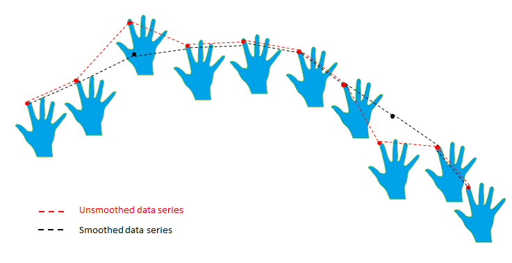

The PXC[M]Smoother utility can be used to smooth data series containing points of 1, 2 or 3 dimensions in a variety of algorithms. The purpose of a smoothing algorithm is to omit "noise" in the data series, caused either by a true atypical sample, or by an error in sampling. Similarly, smoothing a series of points over time (e.g. smoothing a hand or joint position over time) results in a more stable and less jittery tracking location of the smoothed object.
Figure 68 illustrates smoothing of a data series.

Figure 68: Data Smoothing
You can use the smoothing utility to smooth any online data series (it does not have to represent a hand or even a physical object). “Online” here, means that the series values are given one by one and immediately smoothed, as opposed to “offline” algorithms, which read all the data series first and then smooth it entirely.
Smoothing Algorithms
There are four different smoothing algorithms that may be applied to data series containing points of 1, 2 or 3 dimensions. Therefore 12 types of smoothers can be created (depending on the algorithm and on the point dimension). See PXC[M]Smoother for more information about the 12 data smoothing classes.
The available smoothing algorithms are:
| • | Stabilizer - for stabilizing a point in space that represents a stationary object. Ignores small changes under a given threshold and represents close points as the same point. Motion smoothing is also applied when the new point exceeds the stabilization radius. |
| • | Weighted - replaces the current point with a weighted average of the last N points, according to the chosen weights. |
| • | Quadratic - (time-based smoothing*) uses a quadratic equation to interpolate between the previous point and the current one. This produces both stabilization and smoothing of the motion, depending how far the new point is from the current one. |
| • | Spring - (time-based smoothing*) uses a linear equation to interpolate between the previous point and the current one (results in a stabilization effect). |
* In “time-based smoothing", the interpolation value depends on the time that passed between the acqusition of two samples.
Test all the relevant smoothing algorithms, and try different smoothing parameters, when applying smoothing on your data. The influence of the algorithm depends on the data itself, so don’t assume that the same setup will have similar results, when applied to new data types.
Creating a Smoother Instance
Setup up a smoother instance as follows:
| 1. | Create the PXC[M]Smoother class factory. This step only creates the factory handle, and should be called only once. |
| 2. | Use the PXC[M]Smoother to create the specific smoother instances. There are 4 different smoothing algorithms and 3 input data types (1-dimensional, 2-dimensional and 3-dimensional points), so in total there are 12 different ways to create a smoother: |
| a. | Create1DStabilizer/Create2DStabilizer/Create3DStabilizer(stabilizeStrength, stabilizeRadius) The parameter stabilizerRadius defines the range in which a motion is ignored. The parameter stabilizerStrength defines how much smoothing is applied to the motion, when it exceeds the stabilization radius. The values range from 0 to 1, where 1 is the smoothest (and adds more latency). |
| b. | Create1DWeighted/Create2DWeighted/Create3DWeighted(numWeights, weights) The parameter numWeigths defines the number of weights that is used for smoothing, where each weight represent a previous position. The parameter weights is an array of weights, of size numWeights, which is multiplied by the previous position values. If we are at point N, then the weight in cell i will be multiplied by the position at frame N-(numWeights-i). if the weights array is not assigned, all weights will have the value of 1/numWeights. |
| c. | Create1DQuadratic/Create2DQuadratic/Create3DQuadratic(smoothStrength) The parameter smoothStrength defines how much smoothing is applied to the motion at each frame. The values range from 0 to 1, where 1 is the smoothest (and adds more latency). |
| d. | Create1DSpring/Create1DSpring/Create1DSpring(smoothStrength) The parameter smoothStrength defines how much smoothing is applied to the motion at each frame. The values range from 0 to 1, where 1 is the smoothest (and adds more latency). |
 Since different algorithms are used and the data varies, you should assume that the same smoothStrength (or stabilizerStrength) parameters have different effects on the smoothed data. Experiment with different algorithms (according to your needs), using various smoothing parameters, in order to find the setup that best matches your scenario.
Since different algorithms are used and the data varies, you should assume that the same smoothStrength (or stabilizerStrength) parameters have different effects on the smoothed data. Experiment with different algorithms (according to your needs), using various smoothing parameters, in order to find the setup that best matches your scenario.
Example 99 shows how to create a quadratic smoother for 3-dimensional points.
C++ Example 99: Create 3-dimensional Quadratic Smoother
// Create an instance of PXCSession PXCSession* session = PXCSession::CreateInstance();
// Create an instance of PXCSmoother PXCSmoother* smoother = NULL; session->CreateImpl<PXCSmoother>(&smoother);
// Create a 3D smoother, using quadratic algorithm, with smooth strength [0-1] PXCSmoother::Smoother3D smoother3D = smoother->Create3DQuadratic(0.8f); |
C# Example 99: Create 3-dimensional Quadratic Smoother
// Create an instance of PXCMSession PXCMSession session = PXCMSession.CreateInstance();
// Create an instance of PXCMSmoother PXCMSmoother smoother; session.CreateImpl<PXCMSmoother>(out smoother);
// Create a 3D smoother, using quadratic algorithm, with smooth strength [0-1] PXCMSmoother.Smoother3D smoother3D = smoother.Create3DQuadratic(0.8f); |
Java Example 99: Create 3-dimensional Quadratic Smoother
// Create an instance of PXCMSession PXCMSession session = PXCMSession.CreateInstance();
// Create an instance of PXCMSmoother PXCMSmoother smoother=new PXCMSmoother(); session.CreateImpl<PXCMSmoother>(smoother);
// Create a 3D smoother, using quadratic algorithm, with smooth strength [0-1] PXCMSmoother.Smoother3D smoother3D = smoother.Create3DQuadratic(0.8f); |
Using the Smoother
Example 100 shows how to smooth the 3D world position of a joint:
C++ Example 100: Use the 3-dimensional Quadratic Smoother
// Main processing loop // sm is a PXCSenseManager instance while (sm->AcquireFrame(true)>=PXC_STATUS_NO_ERROR) { // Retrieve current hand tracking results for a specific joint (jointData) …
// Smooth joint position value // smoother3D is a PXCSmoother::Smoother3D instance PXCPoint3DF32 smoothedPoint = smoother3D->SmoothValue(jointData.positionWorld);
// Resume next frame processing sm->ReleaseFrame(); } |
C# Example 100: Use the 3-dimensional Quadratic Smoother
// Main processing loop // sm is a PXCMSenseManager instance while (sm.AcquireFrame(true)>=pxcmStatus.PXCM_STATUS_NO_ERROR) { // Retrieve current hand tracking results for a specific joint (jointData) …
// Smooth joint position value // smoother3D is a PXCMSmoother.Smoother3D instance PXCMPoint3DF32 smoothedPoint = smoother3D.SmoothValue(jointData.positionWorld);
// Resume next frame processing sm.ReleaseFrame(); } |
Java Example 100: Use the 3-dimensional Quadratic Smoother
// Main processing loop // sm is a PXCMSenseManager instance while (sm.AcquireFrame(true)>=pxcmStatus.PXCM_STATUS_NO_ERROR) { // Retrieve current hand tracking results for a specific joint (jointData) …
// Smooth joint position value // smoother3D is a PXCMSmoother.Smoother3D instance PXCMPoint3DF32 smoothedPoint = smoother3D.SmoothValue(jointData.positionWorld);
// Resume next frame processing sm.ReleaseFrame(); } |
Full Code Sample
Example 101 demonstrates how to smooth the 3D position of the index finger, using the quadratic smoothing algorithm.
C++ Example 101: Smooth Index Finger Data
// Init PXCSenseManager* senseManager = PXCSenseManager::CreateInstance();
// Hand Module Setup senseManager->EnableHand(); PXCHandModule* handModule = senseManager->QueryHand(); PXCHandData* handDataOutput = handModule->CreateOutput();
// Creating PXCSmoother instance PXCSmoother* smootherFactory; senseManager->QuerySession()->CreateImpl<PXCSmoother>(&smootherFactory);
// Creating 3D smoother with quadratic algorithm with smooth value of 0.8 PXCSmoother::Smoother3D* smoother3D = smootherFactory->Create3DQuadratic(0.8f);
// First Initializing the sense manager if(senseManager->Init() >= PXC_STATUS_NO_ERROR) { // Acquiring frames from input device while(senseManager->AcquireFrame(true) >= PXC_STATUS_NO_ERROR) { // Get current frame hand output handDataOutput->Update();
if(handDataOutput->QueryNumberOfHands() > 0) { // Getting first hand entered in FOV (index = 0) PXCHandData::IHand *hand; handDataOutput->QueryHandData(PXCHandData::ACCESS_ORDER_BY_TIME,0,hand);
// Getting Index fingertip data PXCHandData::JointData jointData; if(hand->QueryTrackedJoint(PXCHandData::JOINT_INDEX_TIP, jointData) >= PXC_STATUS_NO_ERROR) { // Smoothing the value of the Index fingertip world coordinates, output to smoothed3DPoint PXCPoint3DF32 smoothed3DPoint = smoother3D->SmoothValue(jointData.positionWorld);
// Use smoothed3DPoint values //... } }
// Finished working on current frame senseManager->ReleaseFrame(); } // end while acquire frame } // end if Init
// Clean up smoother3D->Release(); smootherFactory->Release(); handDataOutput->Release(); senseManager->Release(); |
C# Example 101: Smooth Index Finger Data
// Init PXCMSenseManager senseManager = PXCMSenseManager.CreateInstance();
// Hand Module Setup senseManager.EnableHand(); PXCMHandModule handModule = senseManager.QueryHand(); PXCMHandData handDataOutput = handModule.CreateOutput();
// Creating PXCMSmoother instance PXCMSmoother smootherFactory; senseManager.session.CreateImpl<PXCMSmoother>(out smootherFactory);
// Creating 3D smoother with quadratic algorithm with smooth value of 0.8 PXCMSmoother.Smoother3D smoother3D = smootherFactory.Create3DQuadratic(0.8f);
// First Initializing the sense manager if(senseManager.Init() >= pxcmStatus.PXCM_STATUS_NO_ERROR) { // Acquiring frames from input device while(senseManager.AcquireFrame(true) >= pxcmStatus.PXCM_STATUS_NO_ERROR) { // Get current frame hand output handDataOutput.Update();
if(handDataOutput.QueryNumberOfHands() > 0) { // Getting first hand entered in FOV (index = 0) PXCMHandData.IHand hand; handDataOutput.QueryHandData(PXCMHandData.AccessOrder.ACCESS_ORDER_BY_TIME,0,out hand);
// Getting Index fingertip data PXCMHandData.JointData jointData; if(hand.QueryTrackedJoint(PXCMHandData.JointType.JOINT_INDEX_TIP, out jointData) >= pxcmStatus.PXCM_STATUS_NO_ERROR) { // Smoothing the value of the Index fingertip world coordinates, output to smoothed3DPoint PXCMPoint3DF32 smoothed3DPoint = smoother3D.SmoothValue(jointData.positionWorld);
// Use smoothed3DPoint values //... } }
// Finished working on current frame senseManager.ReleaseFrame(); } // end while acquire frame } // end if Init
// Clean up smoother3D.Dispose(); smootherFactory.Dispose(); handDataOutput.Dispose(); senseManager.Dispose(); |
Java Example 101: Smooth Index Finger Data
// Init PXCMSenseManager senseManager = PXCMSenseManager.CreateInstance();
// Hand Module Setup senseManager.EnableHand(); PXCMHandModule handModule = senseManager.QueryHand(); PXCMHandData handDataOutput = handModule.CreateOutput();
// Creating PXCMSmoother instance PXCMSmoother smootherFactory=new PXCMSmoother(); senseManager.session.CreateImpl(smootherFactory);
// Creating 3D smoother with quadratic algorithm with smooth value of 0.8 PXCMSmoother.Smoother3D smoother3D = smootherFactory.Create3DQuadratic(0.8f);
// First Initializing the sense manager if(senseManager.Init() >= pxcmStatus.PXCM_STATUS_NO_ERROR) { // Acquiring frames from input device while(senseManager.AcquireFrame(true) >= pxcmStatus.PXCM_STATUS_NO_ERROR) { // Get current frame hand output handDataOutput.Update();
if(handDataOutput.QueryNumberOfHands() > 0) { // Getting first hand entered in FOV (index = 0) PXCMHandData.IHand hand=new PXCMHandData.IHand(); handDataOutput.QueryHandData(PXCMHandData.AccessOrder.ACCESS_ORDER_BY_TIME,0,hand);
// Getting Index fingertip data PXCMHandData.JointData jointData=new PXCMHandData.JointData(); if(hand.QueryTrackedJoint(PXCMHandData.JointType.JOINT_INDEX_TIP,jointData) >= pxcmStatus.PXCM_STATUS_NO_ERROR) { // Smoothing the value of the Index fingertip world coordinates, output to smoothed3DPoint PXCMPoint3DF32 smoothed3DPoint = smoother3D.SmoothValue(jointData.positionWorld);
// Use smoothed3DPoint values //... } }
// Finished working on current frame senseManager.ReleaseFrame(); } // end while acquire frame } // end if Init
// Clean up smoother3D.close(); smootherFactory.close(); handDataOutput.close(); senseManager.close(); |